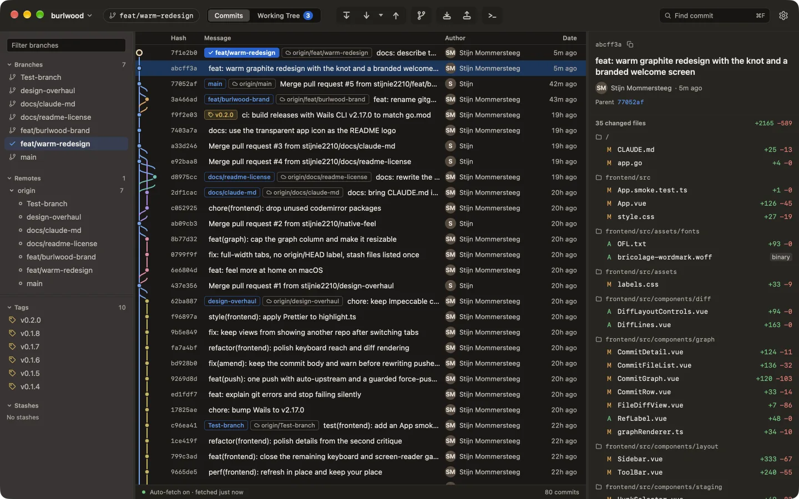
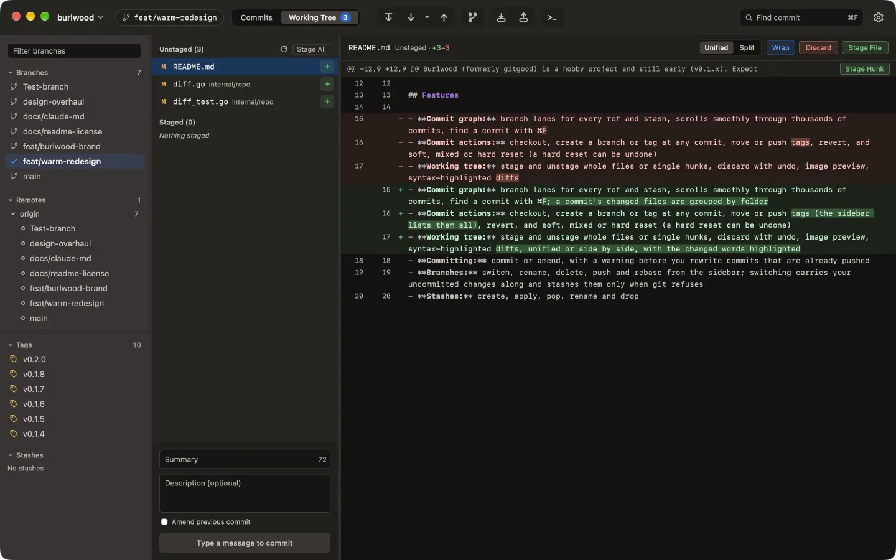

Every branch, tag and stash gets its own lane, and the graph scrolls smoothly through thousands of commits. ⌘F finds a commit; its changed files sit grouped by folder.
Checkout, branch, tag, revert or reset from any row. A hard reset can be undone.

Stage a whole file or a single hunk. The patch is built from exactly the lines on screen. Discard has Undo.
Unified or side by side, with the changed words marked.
| NO. | WHAT | HOW |
|---|---|---|
| 01 | Conflicts | Pick ours or theirs per conflict, diff3 and zdiff3 aware |
| 02 | Remotes | Background fetch, pull with autostash, push with upstream, force-with-lease |
| 03 | Branches | Switch with your changes along, rename, delete, push, rebase |
| 04 | Stashes | Create, apply, pop, rename, drop |
| 05 | Errors | git's output as one sentence and a next step; raw output one click away |
| 06 | Tabs | Several repositories at once, restored on launch |
Universal DMG. Unsigned, so clear the quarantine flag once.
xattr -dr com.apple.quarantine \ /Applications/Burlwood.app
AppImage. Needs WebKit2GTK 4.1.
Zip with burlwood.exe.